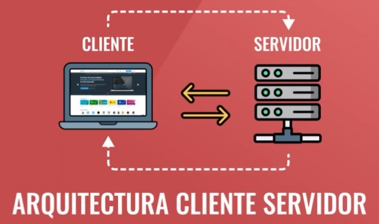

Arquitectura cliente-servidor
¿Qué es la arquitectura Cliente-Servidor?
Esta arquitectura consiste básicamente en un cliente que realiza peticiones a otro programa (el servidor) que le da respuesta. La interacción cliente-servidor es el soporte de la mayor parte de la comunicación por redes. 